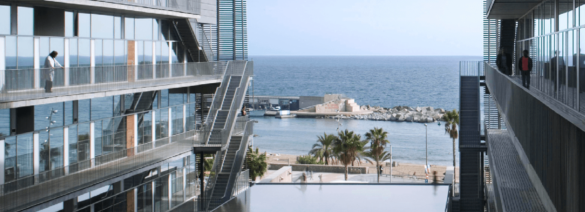

Barcelona Meeting: Autoimmunity and the Exposome
A view from different angles

The HELICAL ITN will be organising a one day meeting in Barcelona on Wednesday the 14th of June 2023. The meeting will be held in the Barcelona Biomedical Research Park (PRBB) and will be open to the public.
This meeting will consist of a morning session covering emerging insights with several speakers and an afternoon session covering a debate on the disease/environmental research nexus, a brainstorming session on the future of vasculitis triggers research and a EU proposal discussion.
Registration is free but mandatory to attend through the Eventbrite event.
Agenda
9:45 - 10:00 Welcome
Morning session: Emerging insights
10:00 - 11:30
Opening Remarks (Mark Little, Trinity College Dublin, Ireland, and Xavier Rodo, ISGlobal, Barcelona, Spain)
Mouse models for research in Kawasaki Disease (Magalí Noval Rivas, Cedar Sinai, Los Angeles, USA)
Biomarkers for the research into autoimmune diseases and vasculitis (Lucia Delogu, Padova U., Italy, NYUAD, Abu Dhabi)
Time series analysis in Kawasaki Disease (Alejandro Fontal / Xavier Rodo, ISGlobal, Barcelona, Spain)
11:30 - 12:00 Coffee break
12:00 - 13:00
Autoimmune diseases and cardiovascular risk: a population-based study on 19 autoimmune diseases and 12 cardiovascular diseases in 22 million individuals in the UK (Nathalie Conrad, Leuven U., Belgium)
Knowledge graphs in patient-environment linkage (Albert Navarro, Trinity College Dublin, Ireland)
Air-borne triggers of vasculitis (Enock Havyarimana, University of Glasgow, Scotland)
13:00 - 14:00 Lunch
Afternoon Session: Debate, Workshop and Manuscript Drafting
14:00 - 14:30
- What KD and cardiovascular clinicians have to say on the disease/environmental research nexus? (Jordi Anton, Pediatric Rheumatologist, St. Joan de Déu Children’s Hospital and Manel Sabaté, Cardiovascular Head at the Clínic Hospital, Barcelona)
14:30 - 16:00
- Afternoon Workshop: Brainstorming Session on the Future of Vasculitis Triggers Research
16:00 - 16:15: Coffee break
16:15 - 17:00
- Manuscript drafting and task allocations. EU proposal discussion
See you in Barcelona!